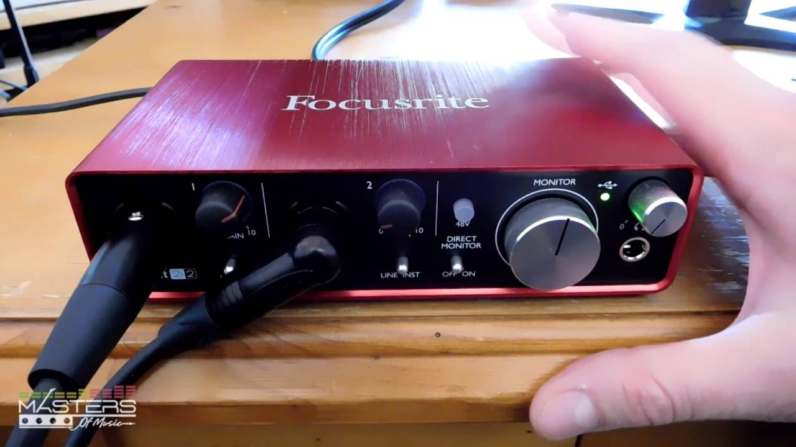

This page will show you the fundamental steps that are required in order to make music on your computer with the use of an electric guitar
Choosing a digital audio workstation
There are a variety of diferent DAWs available on the internet at various price ranges. The one reccomended for this tutorial is Reaper simply because it is free for the first 80 days. Whichever one you decide to use, make sure it is installed and updated..
Connecting your audio interface to your pc
All interfaces should come with a USB Cable that will allow you to connect your device to your pc. When connected for the first time, your pc should automatically detect it and queue any needed updates. Once it is updated, you should be able to open up your DAW and configure the audio inputs to work with the interface.
Plugging in your guitar

Once your digital interface is configured within your DAW, you can connect your guitar to the interface with a 1/4" guitar cable.